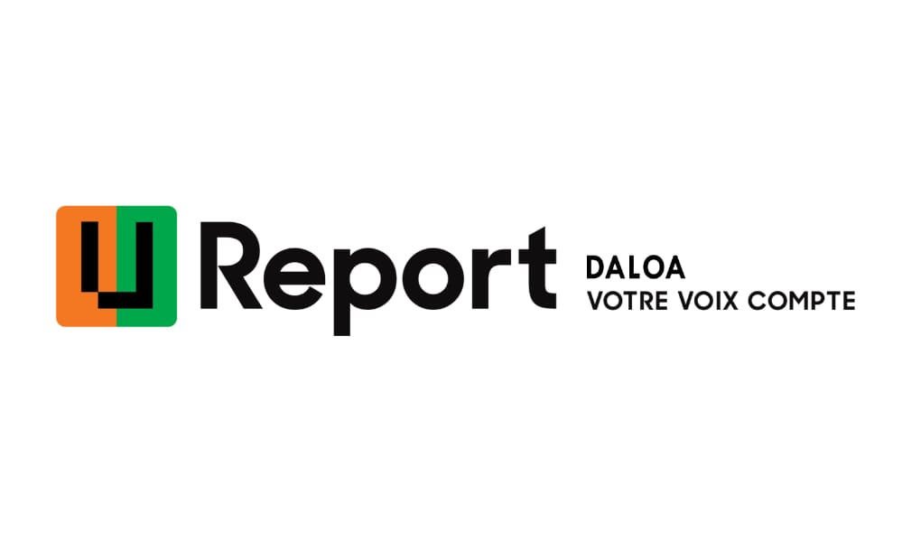

Présentation de U-Report Côte d'Ivoire
U-Report Côte d’Ivoire est une plate-forme de messagerie sociale lancée en 2018
par UNICEF en partenariat avec le gouvernement ivoirien
sur laquelle les jeunes
s’expriment sur les enjeux qui leur tiennent à cœur sans aucune distinction de
race, de religion, de sexe ou d'opinion politique.
Elle est disponible via les SMS (peu importe l’opérateur mobile en Côte d’Ivoire)
et les réseaux sociaux (Facebook et WhatsApp.)
U-Report a pour objectifs de :
Renforcer la participation des adolescents et jeunes au débat public pour
trouver des solutions aux problèmes auxquels ils font face ;
Permettre aux communautés d’influencer les pouvoirs décisionnels pour
un changement positif.
Aujourd’hui, U-Report est présent dans 86 pays à travers le monde et compte 16
millions de membres.
Les utilisateurs de U-Report sont appelés les U-Reporters.
En Côte d’Ivoire, U-Report c’est beaucoup plus qu’une plateforme digitale.
C’est
un mouvement de jeunes bénévoles qui se rassemblent au sein des communautés, qui
s’organisent, qui lancent des initiatives et qui mènent des actions pour un
changement positif dans leur communauté.
Ainsi, présente à Daloa depuis 2019, la communauté compte à son actif plusieurs activités menées.
Le logo de U-Report est relatif au pays en question.
Quand a celui de la côte d'ivoire il se presente comme suit:Cependant chaque communauté à un logo propre à elle. voici le logo de la communauté U-Report Daloa

les activité de U-Report Daloa
U-report Daloa à menée plusieurs activités au sein de la ville de Daloa et dans les environs de la dite ville.Nous avons:
La Journée Mondiale de l'Enfance (JME).
-
la distribution de kits aux enfants demunis
Planting afin de lutter contre la deforestation.
Des visites,des partenariat et des dons au differentes autorités de la ville.
Des session de formation.

Cette journée est dediée a la celebration des droits des enfants dans le monde entier


La communauté U-Report Daloa compte 163 membres et elle est dirigée par une coordinatrice regionale.
U-Report Daloa a un bureau executif qui est composé de plusieurs commissions pour le bon fonctionnementde celle-ci.
Présentation de la coordinatrice.

elle repond au nom de Komenan Martinienne Dominique. Son contact:07 57 86 75 09.